When building proxies that must have different behaviors depending on where the request is coming from, you can leverage the use of multiple Proxy Endpoints with different configurations to properly identify and process these requests.
We will also learn how to use different Target Endpoints, or no target at all.
You get requests coming in via HTTP and HTTPS. You only want to handle the requests over a secure connection, so you want to instruct the developers to use HTTPS whenever they send in a request via HTTP.
Go back to the Develop->API Proxies menu in the UI and create a new Reverse Proxy. The backend (existing API) can be anything. We'll use httpbin.org, a useful test backend for HTTP requests and responses. Specifically, the endpoint we use will show information from the request in a 200 OK response.
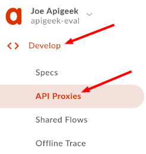
Enter the proxy details:
Proxy Name | lab2a-v1 |
Proxy Base Path | /lab2a/v1 |
Existing API | https://httpbin.org/anything |
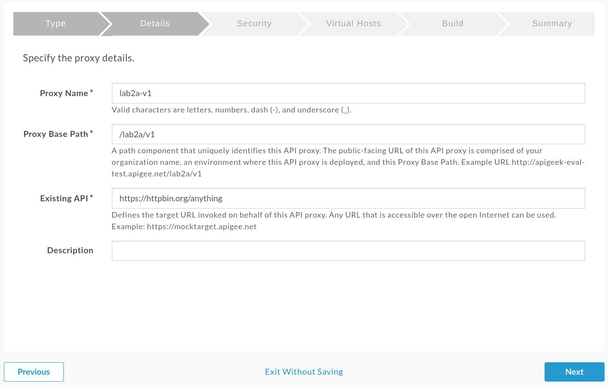
Select ‘Pass through (none)' for Authorization.
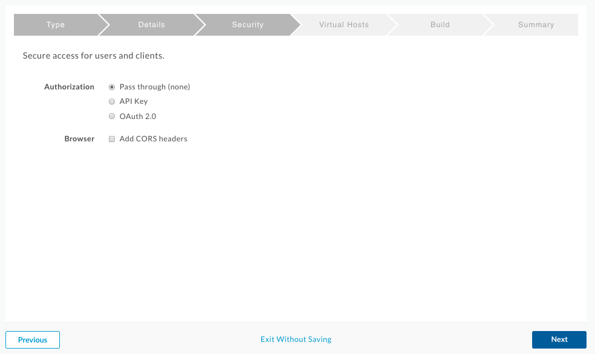
Uncheck the default virtual host. We'll be adding the default virtual host in a new ProxyEndpoint.
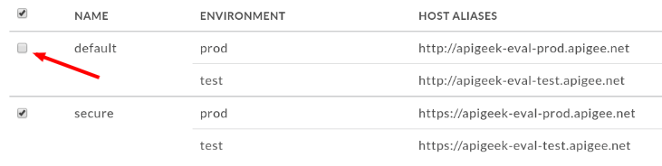
Deploy the proxy to the test environment.
In the new proxy, click in the Develop tab:
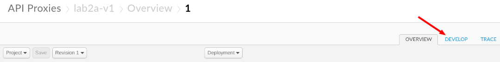
Look for the Proxy Endpoint configurations and click on the "+" sign next to the Proxy Endpoints header:
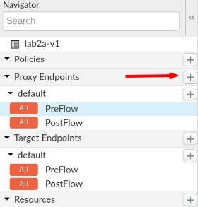
You should see a popup screen asking for a name for the new Proxy Endpoint:
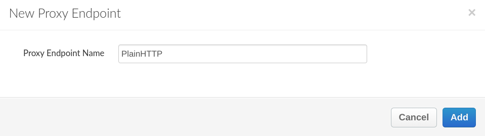
Let's call it:
PlainHTTPClick on ‘Add'
Your newly created Proxy Endpoint will show up right above the existing Target Endpoints:
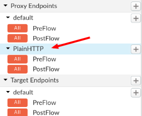
Select it and you should see the XML on the right. Pay special attention to lines 14 to 21:
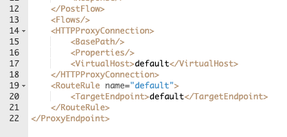
We will need to update it to have the same BasePath as our original Proxy Endpoint, as well as update the RouteRules.
For the HTTPProxyConnection, we're going to use this ProxyEndpoint to handle all non-HTTPS (unencrypted) traffic. Llet's enter the following (replace the HTTPProxyConnection section with the one below):
<HTTPProxyConnection>
<BasePath>/lab2a/v1</BasePath>
<VirtualHost>default</VirtualHost>
</HTTPProxyConnection>The current RouteRules sends the request to the default TargetEndpoint. Instead, for non-encrypted traffic, we don't want traffic going to the backend. We'll replace the whole RouteRules block with a single line:
<RouteRule name="noTarget"/>Here's how your PlainHTTP ProxyEndpoint should look after both changes:
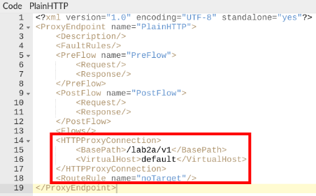
We'll also add a policy to send back a more informative response to let the developers know that requests over plain HTTP are not supported.
Add an AssignMessage policy to the PreFlow in the ‘PlainHTTP' endpoint. Click on ‘PreFlow' under the ‘PlainHTTP' endpoint, and click on the ‘+ Step' button.
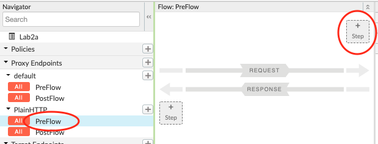
Use the name:
AM-400BadRequestHTTPWith this configuration:
<AssignMessage async="false" continueOnError="false" enabled="true" name="AM-400BadRequestHTTP">
<Set>
<StatusCode>400</StatusCode>
<ReasonPhrase>Bad Request</ReasonPhrase>
<Payload contentType="application/json">{
"message":"HTTP is not supported. Please change your request to HTTPS and try again.",
"url":"https://{request.header.host}{proxy.basepath}{proxy.pathsuffix}?{request.querystring}"
}</Payload>
</Set>
<IgnoreUnresolvedVariables>true</IgnoreUnresolvedVariables>
<AssignTo createNew="true" transport="http" type="response"/>
</AssignMessage>Double check that your default Proxy Endpoint only has the ‘secure' VirtualHost configured. Remove the line with ‘default' if needed. It should look like:
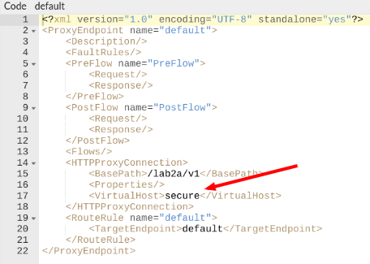
Click on ‘Save'.
Testing will be done the exact same way as in the previous lab. Send a GET request to your proxy with the exception that the URl should start with HTTP this time. You should then be getting a 400 Bad Request as response with the exact payload as set in the policy above.
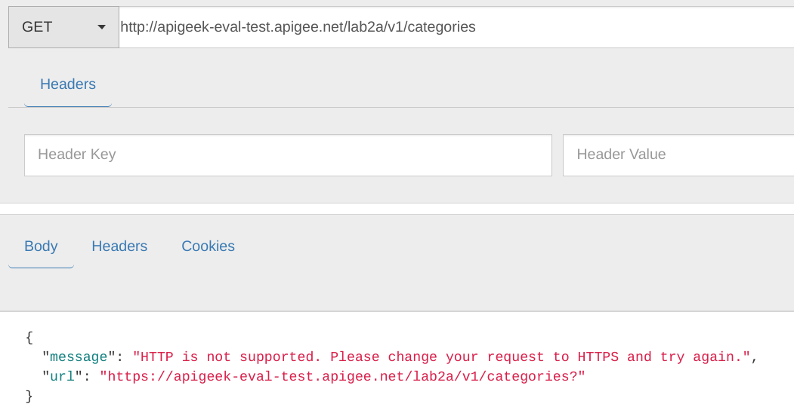
Notice that in the trace, there should be no invocation of the backend as well as there's no Target Endpoint being called.
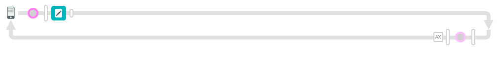
Make sure to test the previous scenario as well (https to same endpoint), which should return you a 200 OK with information from httpbin.org.
You have successfully created a separated ProxyEndpoint to handle non secure requests to your API.